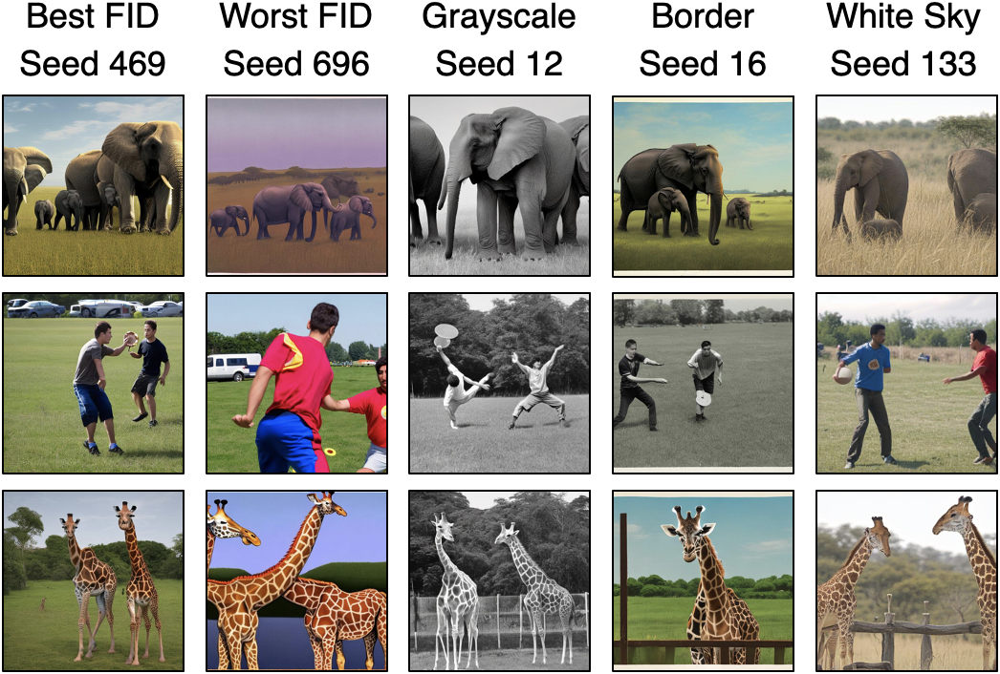
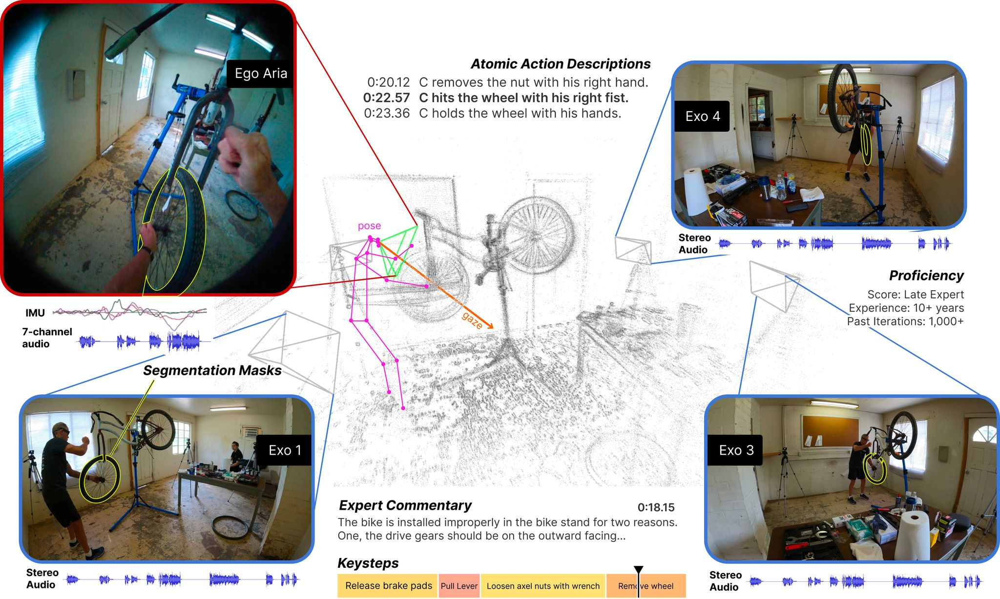
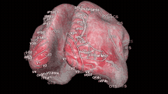
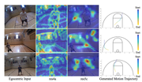
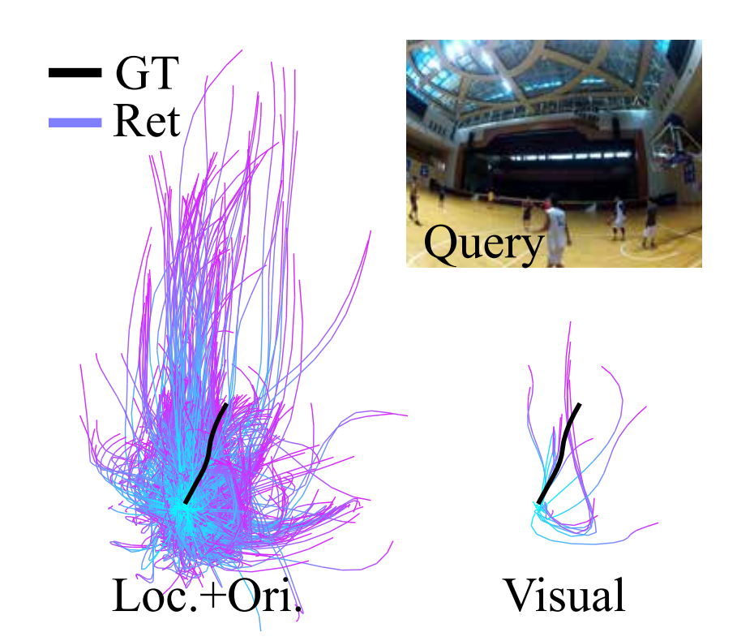
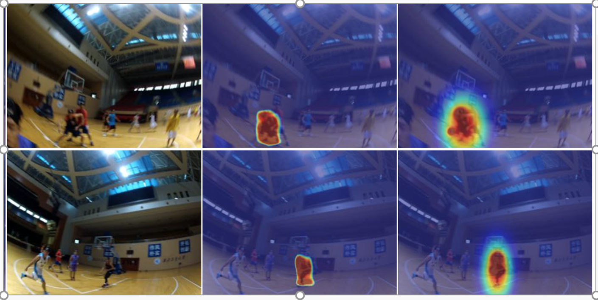
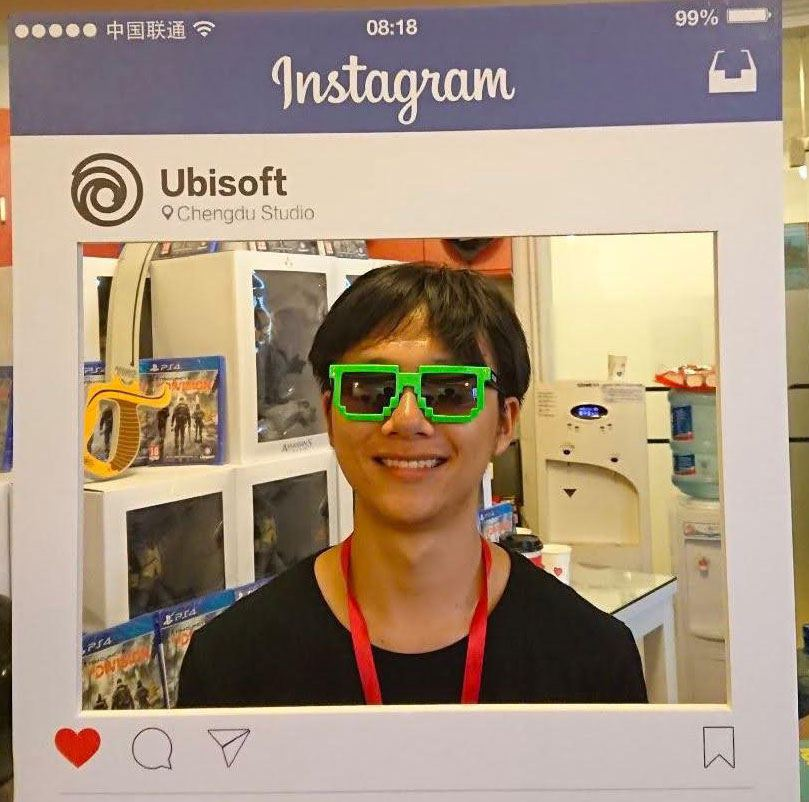
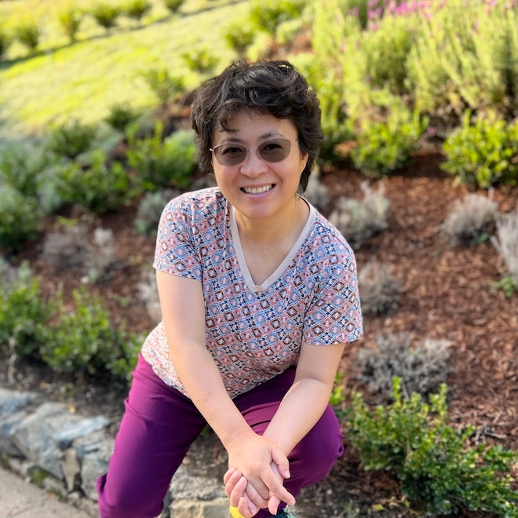

Image Segmentation and Grouping
Graph-based visual grouping, normalized cuts, contour organization, and spectral methods.
Professor of Computer and Information Science, University of Pennsylvania
I work on computer vision, machine learning, and broader questions in machine intelligence. My research has studied image segmentation, grouping, object recognition, human behavior analysis, first-person vision, and computational models that connect perception with action and memory.
I received my B.A. in Computer Science and Mathematics from Cornell University in 1994 and my Ph.D. in Computer Science from UC Berkeley in 1998. Before joining Penn, I was a research faculty member at the Robotics Institute at Carnegie Mellon University.
Graph-based visual grouping, normalized cuts, contour organization, and spectral methods.
Algorithms for understanding human motion, activity, identity, gesture, and behavior in video.
Models that interpret intention, social interaction, and sensorimotor behavior from egocentric video.
Nyström Normalized Cuts PyTorch
Normalized Cut with Nyström approximation, run on million-scale graph in milliseconds. O(n) time complexity, O(1) space complexity.


arXiv







European Conference on Computer Vision, 2018

Computer Vision and Pattern Recognition, 2018

International Conference on Computer Vision, 2017
Computer Vision and Pattern Recognition, 2017
IEEE Transactions on Pattern Analysis and Machine Intelligence, 2004

Current Ph.D. student

Current Ph.D. student
Current Ph.D. student
Associate Professor, McKnight Presidential Fellow, University of Minnesota

Stella Yu, Professor, University of Michigan; Adjunct Professor, UC Berkeley "Computational Models of Perceptual Organization", Carnegie Mellon University, May 2003. Katerina Fragkiadaki, Associate Professor, Carnegie Mellon University
"Multi-granularity Representations for Human Interactions: Pose, Motion and Intention", September 2013.
Katerina Fragkiadaki, Associate Professor, Carnegie Mellon University
"Multi-granularity Representations for Human Interactions: Pose, Motion and Intention", September 2013.